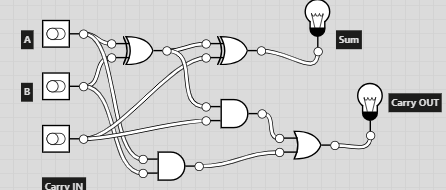

суматор

Суматор (англ. adder) — це електронний пристрій, який виконує операцію додавання двох або більше чисел. Суматори є основними компонентами в цифрових системах, таких як комп'ютери та калькулятори, і використовуються для виконання арифметичних операцій.